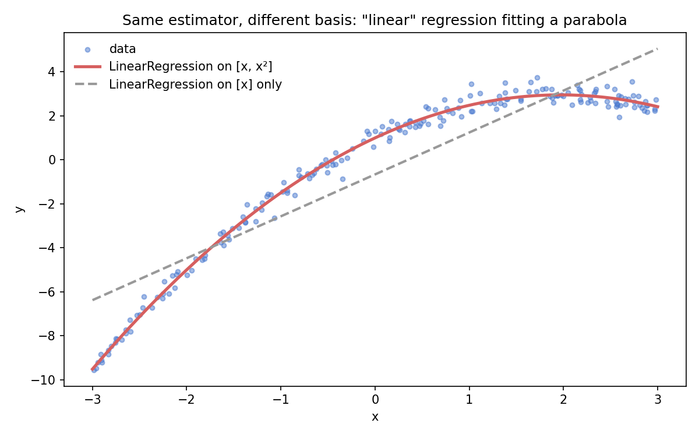

Writing ·
Linear Regression Isn't Always a Straight Line
"Linear regression isn't always a straight line." If you've spent any time around data science content, you've seen this stated — it comes up in interviews, on forums, in countless posts. But it's almost always left as a fact to memorize: the posts tell you that it's true, rarely why. And without the why, the natural follow-up confusion survives intact: if you add x² as a feature, isn't that polynomial regression now — a different thing?
It isn't. This post brings back the science behind the slogan — the math and the intuition that explain it. And the explanation is worth the detour, because it turns out to be a key to understanding machine learning methods far beyond regression: the same idea connects feature engineering, kernel methods, and neural networks.
Linear in what?
Take the model
y = β₀ + β₁x + β₂x²
The curve this traces through your data is a parabola — visibly not a straight line. But look at it from the model's point of view. Rename x² to z, treat it as just another input column, and you get
y = β₀ + β₁x + β₂z
which is a plain linear combination of coefficients. The loss surface is still quadratic in β. The normal equation still solves it. Every diagnostic, every piece of OLS machinery, applies unchanged. Nothing about the fitting changed — only the feature space did.
You can see this in four lines: "polynomial regression" is LinearRegression fed an extra column.
import numpy as np
from sklearn.linear_model import LinearRegression
rng = np.random.default_rng(0)
x = rng.uniform(-3, 3, 200)
y = 1 + 2*x - 0.5*x**2 + rng.normal(0, 0.3, 200) # a parabola + noise
X_poly = np.column_stack([x, x**2]) # x² is just another column
model = LinearRegression().fit(X_poly, y)
print(model.intercept_, model.coef_) # ≈ [1, 2, -0.5] — recovered by plain OLS
The estimator never knew a "polynomial" was involved. It saw two columns and did what it always does.

Both fits come from the same estimator with the same loss and the same solver. The only difference is the basis it was handed. The dashed line isn't a different, "more linear" model — it's the same model in a poorer feature space.
"Linear" in linear regression means linear in the parameters, not linear in the inputs. Polynomial regression is the name of a technique, but mathematically it is linear regression wearing engineered features.
The contrast makes it click. This is not linear regression:
y = β₀ · e^(β₁x)
Here β₁ lives inside the exponential. No renaming trick can pull it out into a linear combination, the loss is no longer quadratic in the parameters, and OLS no longer applies. That's what genuinely nonlinear regression looks like.
A quick self-test — linear in the parameters or not?
y = β₀ + β₁·log(x) — linear. log(x) is just a fixed transform; another column. y = β₀ + β₁²·x — not. The parameter enters squared. y = β₀ + β₁·x₁x₂ — linear. The interaction is computed from inputs before any parameter touches it.
Basis functions: the general principle
The renaming trick generalizes. Any model of the form
y = β₀ + β₁·f₁(x) + β₂·f₂(x) + ... + βₖ·fₖ(x)
is linear regression, for any functions f — squares, logs, sines, interactions, spline segments — with one condition: the f's must be fixed in advance, containing no parameters you need to estimate. These are called basis functions. You choose them, transform your data, and run OLS in the transformed space. The model is a straight "line" there, even if it looks wildly curved back in the original space.
That single condition is the entire boundary between linear and nonlinear regression. Parameters outside the functions: linear. Parameters inside: not.
The linear algebra view: regression is projection
The phrase "basis functions" isn't a loose metaphor — it's literal linear algebra, and seeing it makes everything above geometric.
Stack your n observations into a vector: y lives in ℝⁿ. Now evaluate each basis function on the data. Each one — the column of 1s, the column of x's, the column of x²'s — is also a vector in ℝⁿ. These are the columns of the design matrix X. Every prediction the model can possibly make is a linear combination of those columns:
ŷ = β₀·1 + β₁·x + β₂·x² = Xβ
So the set of all reachable predictions, {Xβ : β ∈ ℝᵏ}, is the span of the columns — the column space of X, a flat k-dimensional subspace of ℝⁿ. That is what "linear in parameters" means geometrically: the model family forms a linear subspace. The basis functions are, in the strict sense, a basis for it. A model that's nonlinear in its parameters, like β₀·e^(β₁x), sweeps out a curved surface in ℝⁿ instead — no subspace, no basis, none of the machinery below.
Fitting by least squares now has a one-word description: projection. The data vector y generally doesn't lie in the column space (real data has noise). OLS finds the point of the subspace closest to y in Euclidean distance — the orthogonal projection of y onto the column space. And orthogonality is where the normal equation comes from: the residual y − Xβ must be perpendicular to every column of X, which is exactly
Xᵀ(y − Xβ) = 0 ⟹ β = (XᵀX)⁻¹Xᵀy
The normal equation isn't an algebraic trick; it's the statement "the error is orthogonal to everything the model can express." The fitted values are ŷ = X(XᵀX)⁻¹Xᵀy = Hy, where the hat matrix H is a projection operator (apply it twice, nothing changes: H² = H).
Every claim in that paragraph is checkable in a few lines of numpy:
X = np.column_stack([np.ones_like(x), x, x**2]) # design matrix: three basis vectors in ℝⁿ
beta = np.linalg.solve(X.T @ X, X.T @ y) # normal equation
residual = y - X @ beta
print(X.T @ residual) # ≈ [0, 0, 0] — residual ⊥ every column: orthogonality, verified
H = X @ np.linalg.inv(X.T @ X) @ X.T # hat matrix
print(np.allclose(H @ H, H)) # True — projecting twice changes nothing: H² = H
print(np.allclose(H @ y, X @ beta)) # True — ŷ really is "project y onto the column space"
This resolves the apparent paradox of the curvy parabola too. In the original x-space the fit looks bent; in ℝⁿ, where the fitting actually happens, it's a point in a perfectly flat 3-dimensional subspace. The curvature lives in how the basis vectors were built, not in the geometry of the fit.
One more insight falls out for free: multicollinearity. If two columns are nearly parallel, the column space itself is barely affected — so the projection ŷ, the predictions, stay stable. But the coordinates of that projection in a nearly-degenerate basis are wildly ill-determined — so the coefficients blow up. Same subspace, bad coordinate system. That's the precise reason collinearity hurts interpretation but often barely hurts prediction.
Watch it happen — duplicate a feature with a whisper of noise and refit on two bootstrap samples:
x_dup = x + rng.normal(0, 1e-6, len(x)) # nearly parallel column
X_col = np.column_stack([np.ones_like(x), x, x_dup])
for seed in [1, 2]:
idx = np.random.default_rng(seed).integers(0, len(x), len(x))
b = np.linalg.lstsq(X_col[idx], y[idx], rcond=None)[0]
yhat = X_col @ b
print(f"coefs: {b.round(1)} first 3 preds: {yhat[:3].round(3)}")
# coefs swing by thousands between resamples (only their SUM is pinned down);
# the predictions barely move.
Where the basis functions come from
Here's the thread most treatments never pull: a surprising amount of machine learning is an answer to the question who supplies the basis functions?
In classical linear modeling, you do. Feature engineering — polynomials, log transforms, interactions, splines — is the craft of hand-picking a basis in which the problem becomes linear. This is why linear models stay competitive in the hands of someone with domain knowledge: the intelligence lives in the features.
Kernel methods make the basis implicit. A kernel SVM never computes the transformed features at all; the kernel trick evaluates inner products in a (sometimes infinite-dimensional) basis space directly. You pick a kernel family, and the basis comes with it, sight unseen.
Neural networks learn the basis. A network's final layer is, quite literally, a linear model — its inputs are the last hidden layer's activations. Everything before that layer is a machine for constructing basis functions from data, tuned by gradient descent instead of chosen by hand. Representation learning is basis learning.
Same skeleton each time — a linear map over some feature space — with escalating automation of the features themselves. Hand-crafted, implicit, learned.
Why it matters
This reframing earns its keep practically. It explains why feature engineering is so powerful with linear models (you're choosing the space where linearity holds). It explains what the kernel trick is actually a shortcut for. And it demystifies neural networks a little: the last layer is old, familiar territory — the novelty is upstream.
So the next time "linear regression isn't always a straight line" comes up, you have more than the slogan — you have the why: linear regression is linear in the parameters, not the inputs. Geometrically it's a projection onto the subspace the basis functions span — which is exactly why transforming the inputs is so powerful.